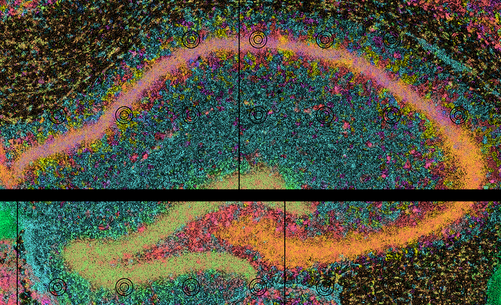

🔧 Quick Start: Run Locally¶
This tutorial walks you through running the CartLoader workflow using a minimal example dataset from the mouse hippocampus.
Use Cases
This tutorial is ideal for users who want to:
- Take full control over the environment
- Customize workflow
- Stay up-to-date with the latest development versions
Requirements
Users will need to:
- Set up
CartLoaderand its dependencies locally (see Installation guide). - Download the example input data (see Input Data)
Input Data¶
The input is a mouse hippocampus SGE, already converted to a format compatible with FICTURE using sge_convert in CartLoader.
File Format
SGE in FICTURE-compatible format includes:
transcripts.unsorted.tsv.gz: transcript-indexed SGE in TSV
1 2 3 4 | |
X: X coordinates in umY: Y coordinates in umgene: gene symbolscount: expression count per pixel per gene
feature.clean.tsv.gz: UMI counts on a per-gene basis in TSV
1 2 3 4 | |
gene: gene symbols
* gene_id: gene IDs
* count: expression count per gene
coordinate_minmax.tsv: X Y min/max coordinates
1 2 3 4 | |
xminxmax: min and max X coordinates in umyminymax: min and max Y coordinates in um
Data Access
The input example data is hosted on Zenodo DOI: 10.5281/zenodo.15701393.
Download the example data:
1 2 3 4 5 | |
Set Up the Environment¶
Pre-installed tools
Please ensure you have installed all required tools (See Installation).
Define paths to all required binaries and resources. Optionally, specify a fixed color map for consistent rendering.
1 2 3 4 5 6 7 8 9 10 11 12 13 14 15 16 17 18 19 20 21 22 | |
Define data ID and analysis parameters:
1 2 3 4 5 6 7 | |
FICTURE Analysis¶
Compute spatial factors using punkst (FICTURE2 mode). See more details on the Reference page.
1 2 3 4 5 6 7 8 9 10 11 12 13 14 15 | |
| Parameter | Required | Type | Description |
|---|---|---|---|
--main |
required 1 | flag | Enable CartLoader to run all five steps |
--in-transcript |
required | string | Path to input transcript-level SGE file |
--out-dir |
required | string | Path to output directory |
--width |
required | int or comma-separated list | LDA training hexagon width(s) |
--n-factor |
required | int or comma-separated list | Number of LDA factors |
--makefn |
string | File name for the generated Makefile (default: run_ficture2.mk ) |
|
--in-feature |
string | Path to input feature file | |
--in-minmax |
string | Path to input coordinate min/max file | |
--cmap-file |
string | Path to color map file | |
--exclude-feature-regex |
regex | Pattern to exclude features | |
--spatula |
string | Path to the spatula binary (default: spatula) |
|
--ficture2 |
string | Path to the punkst directory (defaults to punkst repository within submodules directory of CartLoader) |
|
--n-jobs |
int | Number of parallel jobs (default: 1) |
|
--threads |
int | Number of threads per job (default: 1) |
1: CartLoader requires the user to specify at least one action. Available actions includes: --tile to run tiling step; --segment to run segmentation step; --init-lda to run LDA training step; --decode to run decoding step; --summary to run summarization step; --main to run all above five actions.
CartLoader Asset Packaging¶
Generate pmtiles and web-compatible tile directories. See more details in Reference page.
1 2 3 4 5 6 7 8 9 10 11 12 13 14 15 16 17 18 19 20 21 22 23 | |
| Parameter | Required | Type | Description |
|---|---|---|---|
--out-dir |
required | string | Path to the output directory for PMTiles and web tiles |
--id |
required | string | Dataset ID used for naming outputs and metadata |
--fic-dir |
string | Path to FICTURE outputs (enables factor layers + molecule–factor joins) | |
--sge-dir |
string | Path to SGE outputs from sge_convert (enables SGE-only packaging) |
|
--in-sge-assets |
string | File name of SGE assets JSON/YAML in --sge-dir (default: sge_assets.json) |
|
--in-fic-params |
string | File name of FICTURE params JSON/YAML in --fic-dir (default: ficture.params.json) |
|
--makefn |
string | File name for the generated Makefile (default: run_cartload2.mk) |
|
--spatula |
string | Path to the spatula binary (default: spatula) |
|
--pmtiles |
string | Path to the pmtiles binary (default: pmtiles) |
|
--tippecanoe |
string | Path to the tippecanoe binary (default: tippecanoe) |
|
--n-jobs |
int | Number of parallel jobs (default: 1) |
|
--threads |
int | Number of threads per job (default: 4) |
Upload to Data Repository¶
Choose a data repository to host/share your output
CartLoader supports two upload options (AWS and Zenodo) for storing PMTiles of SGE and spatial factors in a data repository.
Choose the one that best suits your needs.
AWS Uploads¶
Upload the generated CartLoader outputs to your designated AWS S3 directory:
1 2 3 4 5 6 7 8 | |
| Parameter | Required | Type | Description |
|---|---|---|---|
--in-dir |
required | string | Path to the input directory containing the CartLoader asset packaging output |
--s3-dir |
required | string | Path to the target S3 directory for uploading |
--aws |
string | Path to the AWS CLI binary | |
--n-jobs |
int | Number of parallel jobs |
Zenodo Uploads¶
Upload the generated CartLoader outputs to your designated Zenodo deposition or a new deposition.
1 2 3 4 5 6 7 8 9 | |
| Parameter | Required | Type | Description |
|---|---|---|---|
--in-dir |
required | string | Path to the input directory containing the CartLoader asset packaging output |
--upload-method |
required | string | Method to determine which files to upload. Options: all to upload all files in --in-dir; catalog to upload files listed in a catalog YAML file; user_list to upload files explicitly listed via --in-list |
--catalog-yaml |
string | Required if --upload-method catalog. Path to catalog.yaml generated in run_cartload2. If absent, uses the catalog in the input directory specified by --in-dir. |
|
--zenodo-token |
required | string | Path to your Zenodo access token file |
--title |
required | string | Required when creating a new deposition (i.e., if --zenodo-deposition-id is omitted). Title for the new Zenodo deposition. |
--creators |
required | list of str | List of creators in "Lastname, Firstname" format. |
Output Data¶
-

View/Explore¶
The output are available in both CartoScope and Zenodo.
See more details of output at the Reference pages for run_ficture2 and run_cartload2.